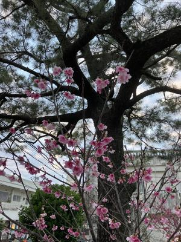

うるがいの話 ある日
最新: 固定電話での認証【うるがいの話 ある日】とは 一日だけのプログです
『うるがいの話』の最新一日だけのプログで、通信料が少なく経済的だ。カニの画像をクリックすると全ての日付が載る『うるがいの話』サイトを表示します
|
|
【うるがいの話】 うるがい(ｳﾙｶﾞｲ urugai)とは、『もずくがに』の名前でとても大きくなります。 |
|---|---|
|
|
【カミマヤーの話】 猫のことを方言でマヤーといいます。カミマヤー（kamimayaa）とは、神の猫のことです。 |
|
【たながぁの音楽】 たながぁ（ﾀﾅｶﾞｰ tanagaa）とは手長えびのことで、何種類かあり大きいのは車 エビぐらいになります。 |

|
【ぶながぁの話】 ぶながぁ(ﾌﾞﾅｶﾞｰ bunagaa)とは、赤い髪の毛、赤い身体、そして身長は１ｍ２０ｃｍ ぐらい、川の蟹を食べているの目撃された。場所は沖縄県国頭郡大宜味村のと ある村僕の隣近所に住んでいる爺さんから、聞いた話です。 |
|
|
【ギーマの話】 ギーマ(giima)とは、山原の里山に咲くスズランに似た、 花を付けます。実は食べられます、 気が付くと口の周りが紫になっています。 |
2025年02月15日 (土）固定電話での認証
16:04

『題名：ご利用明細更新のお知らせ』のメールが届いた。フムフム
このまえ浄水器をクレジットカードを使ったし、確認してみるかと
カードのページにログインする？？、エ！、はじかれる。
仕方ない、パスワードを忘れた方のガイダンスを進む。希望にＩＤ
とパスワードを設定、お！、パスワードの形式が１０桁以上に運用
が変更になっている。で、１０桁のパスワードを設定して、次へ進
むと認証コードを送ったが、登録している電話が固定電話なのでエ
ラーとなっている。
お！、更にガイダンスの下をみると、固定電話に認証コードを自動
音声で架けますと。ホー、でパソコンから認証ボタンを押すと固定
電話が鳴り６桁の数字を２度繰り返す。そして、パソコンで認証コ
ードを入力し無事、ログインでき利用明細を確認できた。
ついでなので、顧客情報の変更で携帯電話を登録するかと、固定電
話に加え携帯電話を登録すると、またもや認証コードを・・・、そ
して固定電話の自動音声を聞き取り入力する。なんて面倒くさいん
だ、と。
携帯電話の情報はなるべく、外部へは登録しないようにしたせいで
ある。しかし、スマホをもっていない老人達はどうするのだろうか
とフト思う。クレジットカードを使わず、現金を使えばいいのか。
近所で最後に咲く桜
